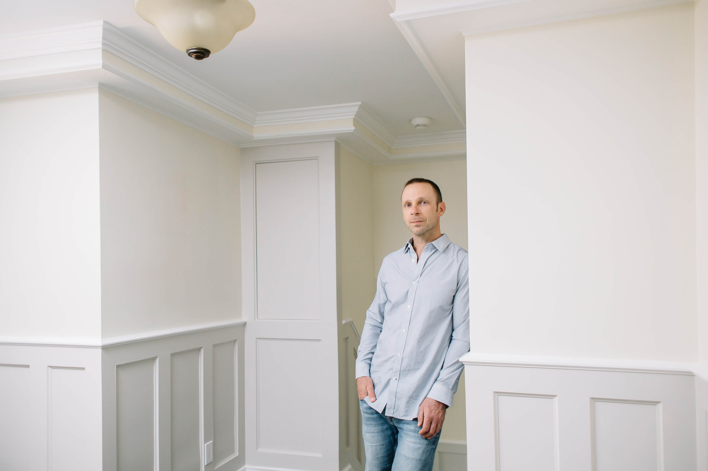

Nous ferons de votre maison, votre foyer
Profil
Peter Hentschel
Contracteurs H & H enrg. est une entreprise montréalaise forte en antécédents familiaux. Actuellement, Peter Hentschel est le gestionnaire principal et propriétaire de l’entreprise fondée en 1960 par son père, Rolf, à l’âge de 22 ans. Rolf compte dans son équipe son père, deux frères et quelques amis. Ensemble, ils passent l’été chaque année à construire des chalets préfabriqués au Québec et en Ontario. En hiver, ils réalisent divers projets de rénovation résidentielle, notamment la finition de sous-sols et la construction d’armoires. Au fil des ans, leur réseau de clients grossit considérablement et Contracteurs H & H enrg. devient synonyme d’un savoir-faire de qualité exceptionnelle.
À l’âge de 16 ans, Peter débute son apprentissage aux côtés de son père à temps partiel en été et pendant les journées de congé scolaire. Il poursuit ensuite sa formation en menuiserie et construction au Collège algonquin et revient à Montréal pour travailler au sein de l’entreprise et tout apprendre de son père. En 2004, Peter devient partenaire de l’entreprise et, en 2010, alors que Rolf prend sa retraite, Peter prend la charge de l’entreprise familiale comme principal propriétaire et gestionnaire, maintenant ainsi la riche tradition familiale de l’entreprise quant à son savoir-faire par excellence.
Au fil des ans, d’autres membres de la famille contribuent à l’avancement de l’entreprise, chacun à sa façon. La mère de Peter, Johanna, travaille sans relâche du côté administratif et le neveu de Peter, Craig, travaille pendant quelques étés pour l’entreprise. Ainsi, cette exploitation familiale s’étend sur quatre générations.
Photos Historique
De gauche à droite: Rolf Hentschel, fondateur de Contracteurs H & H enrg., rénovant la demeure d’un éminent médecin vers 1980, Rolf sur le toit d’un bungalow en construction vers 1975 et un agrandissement érigé sur un des clubs nautiques de l’Ouest de l’Île de Montréal, en cours de construction par Rolf Hentschel vers 1959.
Toutes les photographies de Peter Hentschel sont une courtoisie de Nadia Zhen, photographe. Pour en connaitre davantage sur Nadia et son art, visitez son site Portraits, Commercial & Corporate ainsi que son site Wedding & Lifestyle website.